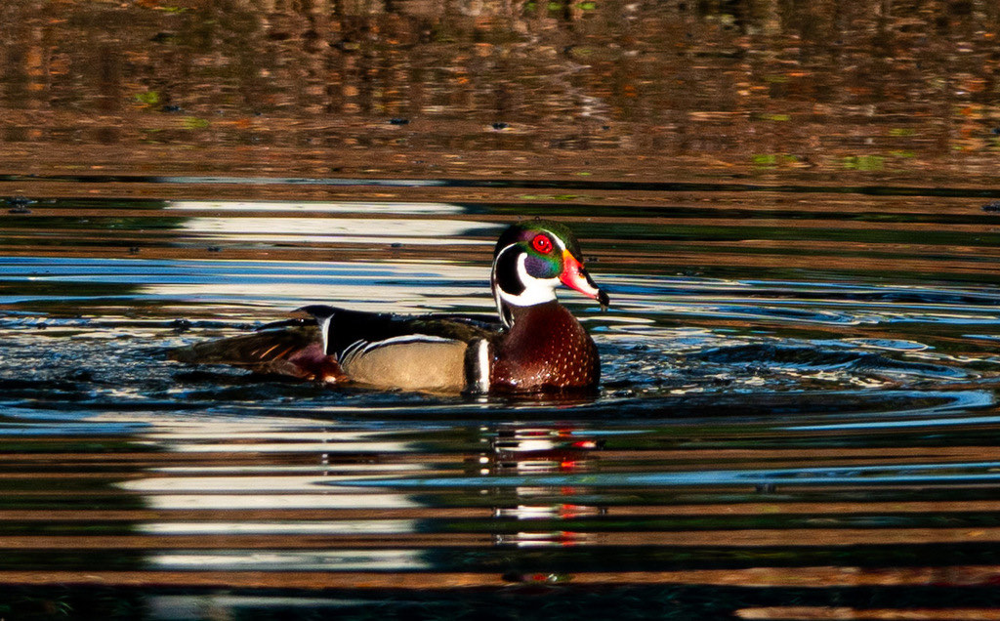

- Most waterfowl nest on the ground, but the wood duck nests up high — inside hollow tree cavities, often old woodpecker holes in cypress and oaks along wooded, swampy shorelines.
- Unlike most ducks, wood ducks have strong, sharp claws on their webbed feet — built for gripping bark and perching high in the canopy, which is exactly where you may spot one along the wooded edges of the pond.
- The day after hatching, the ducklings make a leap of faith — jumping from the high nest hole, sometimes dozens of feet down, and bouncing unhurt before following their mother to the water.
- A century ago wood ducks were nearly gone, hit hard by overhunting and the loss of bottomland forest; hunting limits and a huge nest-box effort brought them back.
Boldly patterned — a glossy green and chestnut head with white stripes, a swept-back crest, and red eyes.
Soft gray-brown with a distinctive white teardrop around the eye.
A slim duck with a boxy, crested head, often holding the head low.
The female gives a loud, rising 'oo-eek' squeal when flushed; the male a softer, thin whistle.
Look for a slim, boxy-headed duck moving through deeply shaded, wooded water rather than out in the open. Wood ducks favor tucked-away spots near overhanging branches — and if approached too closely, they'll flush fast with a loud, rising squeal.
Seeds, acorns, fruits, and aquatic plants, along with insects and other small invertebrates. Acorns are a favorite in fall and winter.
On quieter, shadier stretches of the ponds and wooded edges, often in pairs near overhanging cover rather than out in open water.
Year-round resident, with more birds present in winter. Most likely along sheltered, wooded water.
Watch from a distance and do not feed it. Wood ducks are shy and stick to cover; bread and snacks harm waterfowl health.


- © Rob Carr (CC-BY-NC), via iNaturalist